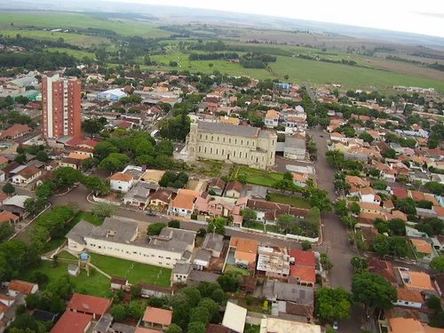

Clima em Bela Vista - PR
Classificado como clima subtropical úmido (Cfa), o município fica em um meio-termo altimétrico entre as áreas mais baixas de Capanema e o topo de Planalto (por volta de 350 a 450 metros de altitude, variando bastante entre os vales dos rios e as partes mais altas):
Verão: Quente e abafado, com máximas frequentemente entre 29°C e 34°C. Nos vales mais baixos o calor se acumula mais durante o dia, enquanto nas áreas mais altas e rurais a temperatura cai um pouco mais à noite.
Inverno: Frio marcante na passagem de massas polares. Como o relevo tem muitos vales e baixadas, o ar frio tende a se acumular nesses pontos nas madrugadas de céu limpo, tornando a ocorrência de geadas bastante comum nos meses de junho a agosto.
Chance de Tempestades
A chance de tempestades é alta e recorrente, especialmente entre a primavera e o verão:
Corredor de temporais: Assim como Capanema e Planalto, Bela Vista da Caroba fica exatamente na rota de colisão entre o ar quente e úmido que vem do Norte/Centro-Oeste e as frentes frias que avançam pelo Sul.
Relevo e instabilidade: O terreno acidentado e ondulado do município ajuda o ar úmido a subir rapidamente em dias abafados, formando nuvens carregadas (Cumulonimbus). Isso gera temporais típicos de fim de tarde e noite com chuva intensa em pouco tempo, muitos raios, rajadas de vento e risco frequente de granizo.
Chance de Tornados e Furacões
A chance de um furacão atingir Bela Vista da Caroba é praticamente zero.
Motivo físico: Por estar no interior do continente (a centenas de quilômetros do litoral) e em latitude subtropical, não há água oceânica quente para alimentar esse tipo de ciclone tropical.
O que realmente ocorre: Os eventos de vento destrutivo na região vêm de tempestades severas locais (como microbursts — correntes de ar que descem com força das nuvens de tempestade) ou linhas de instabilidade que cruzam a fronteira da Argentina/Paraguai.


IMAGEM BELA VISTA